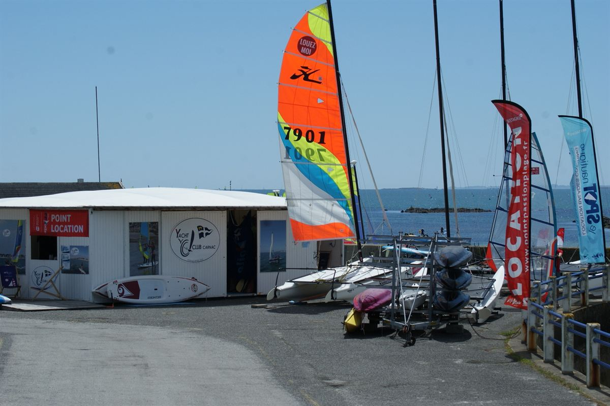
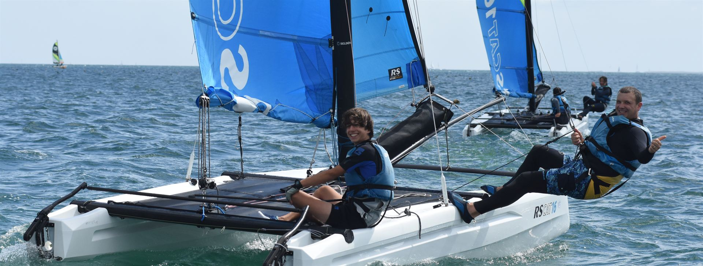
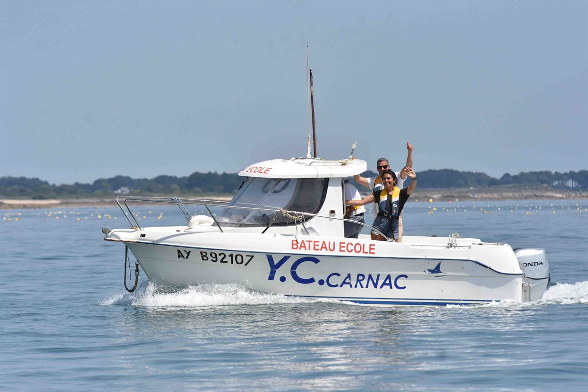

Planche à voile
Le grand classique de la baie. Flotteurs stables pour débuter ou gréements affûtés pour les sensations, dès que le vent se lève.
Accueil · Location & cours particuliers
Location & cours particuliersAu Point Location de Carnac, louez le support de vos envies à l'heure ou à la journée, ou offrez-vous un cours particulier avec un moniteur rien que pour vous. Ouvert d'avril à fin octobre, face à la Baie de Quiberon. Réservation au 02 97 52 10 98.
Du débutant curieux au rider aguerri, chacun trouve sa monture. Matériel récent et entretenu, gilets fournis, plan d'eau surveillé par nos moniteurs.
Le grand classique de la baie. Flotteurs stables pour débuter ou gréements affûtés pour les sensations, dès que le vent se lève.
Deux coques, beaucoup de vitesse. Idéal en duo ou en famille pour filer sur l'eau et sentir la carène décoller au portant.
La sensation de la voile pure, en solo ou en équipage. Réglages fins, gîte maîtrisée : de quoi progresser vite et prendre goût à la barre.
Longez la côte à votre rythme, explorez les criques et les alignements de Carnac depuis l'eau. Accessible à tous, sans expérience.
Debout sur la planche, pagaie en main. La façon la plus douce de prendre le large et d'observer la baie au ras de l'eau.
Windfoil, wingfoil, catamaran à foils : la nouvelle glisse qui décolle. Pour riders confirmés en quête de silence et de vitesse.
Voici nos principaux tarifs de location horaire. Ils sont donnés à titre indicatif ; dériveur, catamaran, kayak et paddle se règlent directement sur place au Point Location selon le support et la durée.
Envie de progresser vite, à votre rythme ? Réservez un cours particulier : un moniteur diplômé accompagne uniquement vous ou votre équipage, sur le support de votre choix. Objectifs sur mesure, corrections immédiates, progression accélérée.



Consultez les créneaux libres du Point Location et réservez votre support ou votre cours particulier en quelques clics. Une question ? Appelez-nous, on vous aiguille avec plaisir.